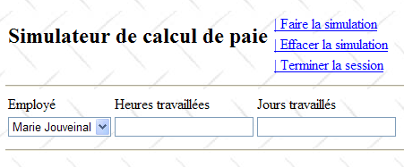
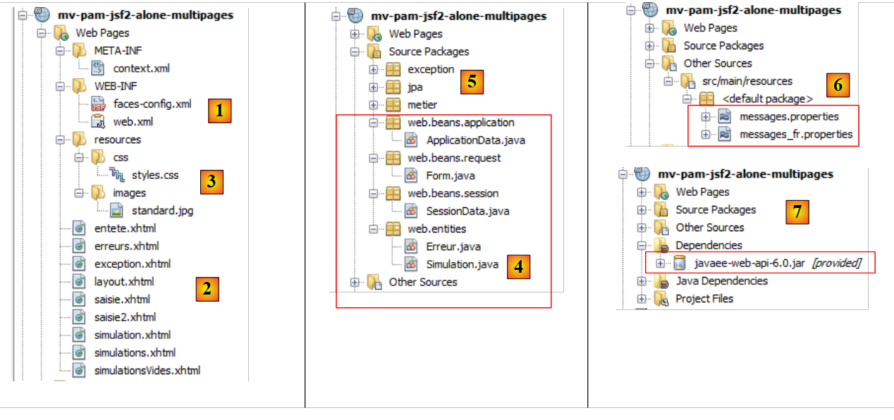
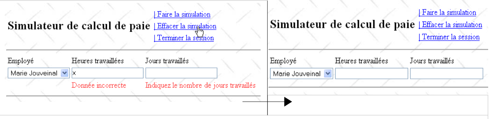
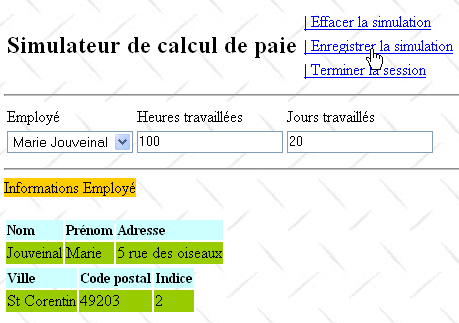

12. Version 7 - Application web PAM multi-vues / multi-pages
Nous revenons ici à l'architecture initiale où la couche [métier] était simulée. Nous savons désormais que celle-ci peut être aisément remplacée par la couche [métier] réelle. La couche [métier] simulée facilite les tests.
 |
Une application JSF est de type MVC (Modèle Vue Contrôleur) :
- la servlet [Faces Servlet] est le contrôleur générique fourni par JSF. Ce contrôleur est étendu par les gestionnaires d'événements spécifiques à l'application. Les gestionnaires d'événements rencontrés jusqu'ici étaient des méthodes des classes servant de modèles aux pages JSF
- les pages JSF envoient les réponses au navigateur client. Ce sont les vues de l'application.
- les pages JSF comportent des éléments dynamiques qu'on appelle le modèle de la page. On rappelle que pour certains auteurs, le modèle recouvre les entités manipulées par l'application, telles par exemple les classes FeuilleSalaire ou Employe. Pour distinguer ces deux modèles, on pourra parler de modèle de l'application et modèle d'une page JSF.
Dans l'architecture JSF, le passage d'une page JSFi à une page JSFj peut être problématique.
- la page JSFi a été affichée. A partir de cette page, l'utilisateur provoque un POST par un événement quelconque [1]
- en JSF, ce POST sera traité [2a,2b] en général par une méthode C du modèle Mi de la page JSFi. On peut dire que la méthode C est un contrôleur secondaire.
- si à l'issue de cette méthode, la page JSFj doit être affichée, le contrôleur C doit :
- mettre à jour [2c] le modèle Mj de la page JSFj
- rendre [2a] au contrôleur principal, la clé de navigation qui permettra l'affichage de la page JSFj
L'étape 1 nécessite que le modèle Mi de la page JSFi ait une référence sur modèle Mj de la page JSFj. Cela complique un peu les choses rendant les modèles Mi dépendant les uns des autres. En effet, le gestionnaire C du modèle Mi qui met à jour le modèle Mj doit connaître celui-ci. Si on est amené à changer le modèle Mj, on sera alors amené à changer le gestionnaire C du modèle Mi.
Il existe un cas où la dépendance des modèles entre-eux peut être évitée : celui où il y a un unique modèle M qui sert à toutes les pages JSF. Cette architecture n'est utilisable que dans les applications n'ayant que quelques vues mais elle se révèle alors très simple d'usage. C'est celle que nous utilisons maintenant.
Dans ce contexte, l'architecture de l'application est la suivante :
 |
12.1. Les vues de l'application
Les différentes vues présentées à l'utilisateur seront les suivantes :
-
la vue [VueSaisies] qui présente le formulaire de simulation
-
la vue [VueSimulation] utilisée pour afficher le résultat détaillé de la simulation :


- la vue [VueSimulations] qui donne la liste des simulations faites par le client

- la vue [VueSimulationsVides] qui indique que le client n'a pas ou plus de simulations :

- la vue [VueErreur] qui indique une ou plusieurs erreurs :

12.2. Le projet Netbeans de la couche [web]
Le projet Netbeans de cette version sera le projet Maven suivant :
 |
- en [1], les fichiers de configuration,
- en [2], les pages JSF,
- en [3], la feuille de style et l'image de fond des vues,
- en [4], les classes de la couche [web],
- en [5], les couches basses de l'application,
- en [6], le fichier des messages pour l'internationalisation de l'application,
- en [7], les dépendances du projet.
Nous passons en revue certains de ces éléments.
12.2.1. Les fichiers de configuration
Les fichiers [web.xml] et [faces-config.xml] sont identiques à ceux du projet précédent à l'exception d'un détail dans [web.xml] :
<?xml version="1.0" encoding="UTF-8"?>
<web-app version="3.0" xmlns="http://java.sun.com/xml/ns/javaee" xmlns:xsi="http://www.w3.org/2001/XMLSchema-instance" xsi:schemaLocation="http://java.sun.com/xml/ns/javaee http://java.sun.com/xml/ns/javaee/web-app_3_0.xsd">
...
<welcome-file-list>
<welcome-file>faces/saisie.xhtml</welcome-file>
</welcome-file-list>
...
</web-app>
- lignes 4-6 : la page d'accueil est la page [saisie.xhtml]
12.2.2. La feuille de style
Le fichier [styles.css] est le suivant :
.simulationsHeader {
text-align: center;
font-style: italic;
color: Snow;
background: Teal;
}
.simuNum {
height: 25px;
text-align: center;
background: MediumTurquoise;
}
.simuNom {
text-align: left;
background: PowderBlue;
}
.simuPrenom {
width: 6em;
text-align: left;
color: Black;
background: MediumTurquoise;
}
.simuHT {
width: 3em;
text-align: center;
color: Black;
background: PowderBlue;
}
.simuJT {
width: 3em;
text-align: center;
color: Black;
background: MediumTurquoise;
}
.simuSalaireBase {
width: 9em;
text-align: center;
color: Black;
background: PowderBlue;
}
.simuIndemnites {
width: 3em;
text-align: center;
color: Black;
background: MediumTurquoise;
}
.simuCotisationsSociales {
width: 6em;
text-align: center;
background: PowderBlue;
}
.simuSalaireNet {
width: 10em;
text-align: center;
background: MediumTurquoise;
}
.erreursHeaders {
background: Teal;
background-color: #ff6633;
color: Snow;
font-style: italic;
text-align: center
}
.erreurClasse {
background: MediumTurquoise;
background-color: #ffcc66;
height: 25px;
text-align: center
}
.erreurMessage {
background: PowderBlue;
background-color: #ffcc99;
text-align: left
}
Voici des exemples de code JSF utilisant ces styles :
Vue Simulations
<h:dataTable value="#{form.simulations}" var="simulation"
headerClass="simulationsHeaders" columnClasses="simuNum,simuNom,simuPrenom,simuHT,simuJT,simuSalaireBase,simuIndemnites,simuCotisationsSociales,simuSalaireNet">
Le résultat obtenu est le suivant :

Vue Erreur
<h:dataTable value="#{form.erreurs}" var="erreur"
headerClass="erreursHeaders" columnClasses="erreurClasse,erreurMessage">

12.2.3. Le fichier des messages
Le fichier des messages [messages_fr.properties] est le suivant :
form.titre=Simulateur de calcul de paie
form.comboEmployes.libell\u00e9=Employ\u00e9
form.heuresTravaill\u00e9es.libell\u00e9=Heures travaill\u00e9es
form.joursTravaill\u00e9s.libell\u00e9=Jours travaill\u00e9s
form.heuresTravaill\u00e9es.required=Indiquez le nombre d'heures travaill\u00e9es
form.heuresTravaill\u00e9es.validation=Donn\u00e9e incorrecte
form.joursTravaill\u00e9s.required=Indiquez le nombre de jours travaill\u00e9s
form.joursTravaill\u00e9s.validation=Donn\u00e9e incorrecte
form.btnSalaire.libell\u00e9=Salaire
form.btnRaz.libell\u00e9=Raz
exception.header=L'exception suivante s'est produite
exception.httpCode=Code HTTP de l'erreur
exception.message=Message de l'exception
exception.requestUri=Url demand\u00e9e lors de l'erreur
exception.servletName=Nom de la servlet demand\u00e9e lorsque l'erreur s'est produite
form.infos.employ\u00e9=Informations Employ\u00e9
form.employe.nom=Nom
form.employe.pr\u00e9nom=Pr\u00e9nom
form.employe.adresse=Adresse
form.employe.ville=Ville
form.employe.codePostal=Code postal
form.employe.indice=Indice
form.infos.cotisations=Informations Cotisations sociales
form.cotisations.csgrds=CSGRDS
form.cotisations.csgd=CSGD
form.cotisations.retraite=Retraite
form.cotisations.secu=S\u00e9curit\u00e9 sociale
form.infos.indemnites=Informations Indemnit\u00e9s
form.indemnites.salaireHoraire=Salaire horaire
form.indemnites.entretienJour=Entretien / Jour
form.indemnites.repasJour=Repas / Jour
form.indemnites.cong\u00e9sPay\u00e9s=Cong\u00e9s pay\u00e9s
form.infos.salaire=Informations Salaire
form.salaire.base=Salaire de base
form.salaire.cotisationsSociales=Cotisations sociales
form.salaire.entretien=Indemnit\u00e9s d'entretien
form.salaire.repas=Indemnit\u00e9s de repas
form.salaire.net=Salaire net
form.menu.faireSimulation=| Faire la simulation
form.menu.effacerSimulation=| Effacer la simulation
form.menu.enregistrerSimulation=| Enregistrer la simulation
form.menu.retourSimulateur=| Retour au simulateur
form.menu.voirSimulations=| Voir les simulations
form.menu.terminerSession=| Terminer la session
simulations.headers.nom=Nom
simulations.headers.nom=Nom
simulations.headers.prenom=Pr\u00e9nom
simulations.headers.heuresTravaillees=Heures travaill\u00e9es
simulations.headers.joursTravailles=Jours Travaill\u00e9s
simulations.headers.salaireBase=Salaire de base
simulations.headers.indemnites=Indemnit\u00e9s
simulations.headers.cotisationsSociales=Cotisations sociales
simulations.headers.salaireNet=SalaireNet
simulations.headers.numero=N\u00b0
erreur.titre=Une erreur s'est produite.
erreur.exceptions=Cha\u00eene des exceptions
exception.type=Type de l'exception
exception.message=Message associ\u00e9
12.2.4. La couche [métier]
La couche [métier] simulée est modifiée de la façon suivante :
package metier;
...
public class Metier implements ImetierLocal, Serializable {
// liste des employes
private Map<String,Employe> hashEmployes=new HashMap<String,Employe>();
private List<Employe> listEmployes;
// obtenir la feuille de salaire
public FeuilleSalaire calculerFeuilleSalaire(String SS,
double nbHeuresTravaillées, int nbJoursTravaillés) {
// on récupère l'employé
Employe e=hashEmployes.get(SS);
// on rend une exception si l'employé n'existe pas
if(e==null){
throw new PamException(String.format("L'employé de n° SS [%s] n'existe pas",SS),1);
}
// on rend une feuille de salaire fictive
return new FeuilleSalaire(e,new Cotisation(3.49,6.15,9.39,7.88),e.getIndemnite(),new ElementsSalaire(100,100,100,100,100));
}
// liste des employés
public List<Employe> findAllEmployes() {
if(listEmployes==null){
// on crée une liste de trois employés
listEmployes=new ArrayList<Employe>();
listEmployes.add(new Employe("254104940426058","Jouveinal","Marie","5 rue des oiseaux","St Corentin","49203",new Indemnite(2,2.1,2.1,3.1,15)));
listEmployes.add(new Employe("260124402111742","Laverti","Justine","La brûlerie","St Marcel","49014",new Indemnite(1,1.93,2,3,12)));
// dictionnaire des employes
for(Employe e:listEmployes){
hashEmployes.put(e.getSS(),e);
}
// on ajoute un employé qui n'existera pas dans le dictionnaire
listEmployes.add(new Employe("X","Y","Z","La brûlerie","St Marcel","49014",new Indemnite(1,1.93,2,3,12)));
}
// on rend la liste des employés
return listEmployes;
}
}
- ligne 8 : la liste des employés
- ligne 7 : la même liste sous forme de dictionnaire indexé par le n° SS des employés
- lignes 24-39 : la méthode findAllEmployes qui rend la liste des employés. Cette méthode crée une liste en dur et la référence par le champ employés de la ligne 8.
- lignes 27-33 : une liste et un dictionnaire de deux employés sont créés
- ligne 35 : un employé est ajouté à la liste employes (ligne 8) mais pas au dictionnaire hashEmployes (ligne 7). Ceci pour qu'il apparaisse dans le combo des employés mais qu'ensuite il ne soit pas reconnu par la méthode calculerFeuilleSalaire (ligne 14) afin que celle-ci lance une exception (ligne 17).
- lignes 11-21 : la méthode calculerFeuilleSalaire
- ligne 14 : l'employé est cherché dans le dictionnaire hashEmployes via son n° SS. S'il n'est pas trouvé, une exception est lancée (lignes 16-18). Ainsi aurons-nous une exception pour l'employé de n° SS X ajouté ligne 35 dans la liste employés mais pas dans le dictionnaire hashEmployes.
- ligne 20, une feuille de salaire fictive est créée et rendue.
12.3. Les beans de l'application
Il y aura trois beans de trois portées différentes :
 |
12.3.1. Le bean ApplicationData
Le bean ApplicationData sera de portée application :
package web.beans.application;
import java.io.Serializable;
import java.util.logging.Logger;
import javax.annotation.PostConstruct;
import javax.enterprise.context.ApplicationScoped;
import javax.inject.Named;
import metier.IMetierLocal;
import metier.Metier;
@Named
@ApplicationScoped
public class ApplicationData implements Serializable {
// couche métier
private IMetierLocal metier = new Metier();
// logger
private boolean logsEnabled = true;
private final Logger logger = Logger.getLogger("pam");
public ApplicationData() {
}
@PostConstruct
public void init() {
// log
if (isLogsEnabled()) {
logger.info("ApplicationData");
}
}
// getters et setters
...
}
- ligne 11 : l'annotation @Named fait de la classe un bean managé. On notera qu'à la différence du projet précédent, on n'a pas utilisé l'annotation @ManagedBean. La raison en est que la référence de cette classe doit être injectée dans une autre classe à l'aide de l'annotation @Inject et que celle-ci n'injecte que des classes avec l'annotation @Named.
- ligne 12 : l'annotation @ApplicationScoped fait de la classe, un objet de portée application. On notera que la classe de l'annotation est [javax.enterprise.context.ApplicationScoped] (ligne 6) et non [javax.faces.bean.ApplicationScoped] comme dans les beans du projet précédent.
Le bean ApplicationData sert à deux choses :
- ligne 16 : maintenir une référence sur la couche [métier],
- lignes 18-19 : définir un logueur qui pourra être utilisé par les autres beans pour faire des logs sur la console de Glassfish.
12.3.2. Le bean SessionData
Le bean SessionData sera de portée session :
package web.beans.session;
import java.io.Serializable;
import java.util.ArrayList;
import java.util.List;
import javax.annotation.PostConstruct;
import javax.enterprise.context.SessionScoped;
import javax.inject.Inject;
import javax.inject.Named;
import web.beans.application.ApplicationData;
import web.entities.Simulation;
@Named
@SessionScoped
public class SessionData implements Serializable {
// application
@Inject
private ApplicationData applicationData;
// simulations
private List<Simulation> simulations = new ArrayList<Simulation>();
private int numDerniereSimulation = 0;
private Simulation simulation;
// menus
private boolean menuFaireSimulationIsRendered = true;
private boolean menuEffacerSimulationIsRendered = true;
private boolean menuEnregistrerSimulationIsRendered;
private boolean menuVoirSimulationsIsRendered;
private boolean menuRetourSimulateurIsRendered;
private boolean menuTerminerSessionIsRendered = true;
// locale
private String locale="fr_FR";
// constructeur
public SessionData() {
}
@PostConstruct
public void init() {
// log
if (applicationData.isLogsEnabled()) {
applicationData.getLogger().info("SessionData");
}
}
// gestion des menus
public void setMenu(boolean menuFaireSimulationIsRendered, boolean menuEnregistrerSimulationIsRendered, boolean menuEffacerSimulationIsRendered, boolean menuVoirSimulationsIsRendered, boolean menuRetourSimulateurIsRendered, boolean menuTerminerSessionIsRendered) {
this.setMenuFaireSimulationIsRendered(menuFaireSimulationIsRendered);
this.setMenuEnregistrerSimulationIsRendered(menuEnregistrerSimulationIsRendered);
this.setMenuVoirSimulationsIsRendered(menuVoirSimulationsIsRendered);
this.setMenuEffacerSimulationIsRendered(menuEffacerSimulationIsRendered);
this.setMenuRetourSimulateurIsRendered(menuRetourSimulateurIsRendered);
this.setMenuTerminerSessionIsRendered(menuTerminerSessionIsRendered);
}
// getters et setters
...
}
- ligne 13 : la classe SessionData est un bean managé (@Named) qui pourra être injecté dans d'autres beans managés,
- ligne 14 : il est de portée session (@SessionScoped),
- lignes 18-19 : une référence sur le bean ApplicationData lui est injecté (@Inject),
- lignes 21-32 : les données de l'application qui doivent être maintenues au fil des sessions.
- ligne 21 : la liste des simulations faites par l'utilisateur,
- ligne 22 : le n° de la dernière simulation enregistrée,
- ligne 23 : la dernière simulation qui a été faite,
- lignes 25-30 : les options du menu,
- ligne 32 : la locale de l'application.
Lignes 39-44, la méthode init est exécutée après instanciation de la classe (@PostConstruct). Ici, elle n'est utilisée que pour laisser une trace de son exécution. On doit pouvoir vérifier qu'elle n'est exécutée qu'une fois par utilisateur puisque la classe est de portée session. Ligne 42, la méthode utilise le logueur défini dans la classe ApplicationData. C'est pour cette raison qu'on avait besoin d'injecter une référence sur ce bean (lignes 18-19).
12.3.3. Le bean Form
Le bean Form est de portée requête :
package web.beans.request;
import java.util.ArrayList;
import java.util.List;
import javax.enterprise.context.RequestScoped;
import javax.faces.context.FacesContext;
import javax.inject.Inject;
import javax.inject.Named;
import javax.servlet.http.HttpServletRequest;
import jpa.Employe;
import metier.FeuilleSalaire;
import web.beans.application.ApplicationData;
import web.beans.session.*;
import web.entities.Erreur;
import web.entities.Simulation;
@Named
@RequestScoped
public class Form {
public Form() {
}
// autres beans
@Inject
private ApplicationData applicationData;
@Inject
private SessionData sessionData;
// le modèle des vues
private String comboEmployesValue = "";
private String heuresTravaillées = "";
private String joursTravaillés = "";
private Integer numSimulationToDelete;
private List<Erreur> erreurs = new ArrayList<Erreur>();
private FeuilleSalaire feuilleSalaire;
// liste des employés
public List<Employe> getEmployes(){
return applicationData.getMetier().findAllEmployes();
}
// action du menu
public String faireSimulation() {
...
}
public String enregistrerSimulation() {
...
}
public String effacerSimulation() {
...
}
public String voirSimulations() {
...
}
public String retourSimulateur() {
...
}
public String terminerSession() {
...
}
public String retirerSimulation() {
...
}
private void razFormulaire() {
...
}
// getters et setters
...
}
- ligne 17, la classe est un bean managé (@Named),
- ligne 18, de portée requête (@RequestScoped),
- lignes 24-25 : injection d'une référence sur le bean de portée application ApplicationData,
- lignes 26-27 : injection d'une référence sur le bean de portée session SessionData.
12.4. Les pages de l'application
 |
12.4.1. [layout.xhtml]
La page [layout.xhtml] assure la mise en page de toutes les vues :
<?xml version='1.0' encoding='UTF-8' ?>
<!DOCTYPE html PUBLIC "-//W3C//DTD XHTML 1.0 Transitional//EN" "http://www.w3.org/TR/xhtml1/DTD/xhtml1-transitional.dtd">
<html xmlns="http://www.w3.org/1999/xhtml"
xmlns:h="http://java.sun.com/jsf/html"
xmlns:f="http://java.sun.com/jsf/core"
xmlns:ui="http://java.sun.com/jsf/facelets">
<f:view locale="#{sessionData.locale}">
<h:head>
<title><h:outputText value="#{msg['form.titre']}"/></title>
<h:outputStylesheet library="css" name="styles.css"/>
</h:head>
<script type="text/javascript">
function raz(){
// on change les valeurs postées
document.forms['formulaire'].elements['formulaire:comboEmployes'].value="0";
document.forms['formulaire'].elements['formulaire:heuresTravaillees'].value="0";
document.forms['formulaire'].elements['formulaire:joursTravailles'].value="0";
}
</script>
<h:body style="background-image: url('${request.contextPath}/resources/images/standard.jpg');">
<h:form id="formulaire">
<!-- entete -->
<ui:include src="entete.xhtml" />
<!-- contenu -->
<ui:insert name="part1" >
Gestion des assistantes maternelles
</ui:insert>
<ui:insert name="part2"/>
</h:form>
</h:body>
</f:view>
</html>
Toute vue est constituée des éléments suivants :
- un entête affiché par le fragment [entete.xhtml] (ligne 24),
- un corps formé de deux fragments appelés part1 (lignes 26-28) et part2 (ligne 29),
- ligne 8 : l'attribut locale assure l'internationalisation des pages. Ici il n'y en aura qu'une : fr_FR,
- lignes 14-19 : un code Javascript.
L'affichage de la page [layout.xhtml] est le suivant :
 |
- en [1], l'entête [entete.xhtml],
- en [2], le fragment part1.
12.4.2. L'entête [entete.xhtml]
Le code de la page [entete.xhtml] est le suivant :
<?xml version='1.0' encoding='UTF-8' ?>
<!DOCTYPE html PUBLIC "-//W3C//DTD XHTML 1.0 Transitional//EN" "http://www.w3.org/TR/xhtml1/DTD/xhtml1-transitional.dtd">
<html xmlns="http://www.w3.org/1999/xhtml"
xmlns:h="http://java.sun.com/jsf/html"
xmlns:f="http://java.sun.com/jsf/core"
xmlns:ui="http://java.sun.com/jsf/facelets">
<ui:composition>
<!-- entete -->
<h:panelGrid columns="2">
<h:panelGroup>
<h2><h:outputText value="#{msg['form.titre']}"/></h2>
</h:panelGroup>
<h:panelGroup>
<h:panelGrid columns="1">
<h:commandLink id="cmdFaireSimulation" value="#{msg['form.menu.faireSimulation']}" action="#{form.faireSimulation}" rendered="#{sessionData.menuFaireSimulationIsRendered}"/>
<h:commandLink id="cmdEffacerSimulation" onclick="raz()" value="#{msg['form.menu.effacerSimulation']}" action="#{form.effacerSimulation}" rendered="#{sessionData.menuEffacerSimulationIsRendered}"/>
<h:commandLink id="cmdEnregistrerSimulation" immediate="true" value="#{msg['form.menu.enregistrerSimulation']}" action="#{form.enregistrerSimulation}" rendered="#{sessionData.menuEnregistrerSimulationIsRendered}"/>
<h:commandLink id="cmdVoirSimulations" immediate="true" value="#{msg['form.menu.voirSimulations']}" action="#{form.voirSimulations}" rendered="#{sessionData.menuVoirSimulationsIsRendered}"/>
<h:commandLink id="cmdRetourSimulateur" immediate="true" value="#{msg['form.menu.retourSimulateur']}" action="#{form.retourSimulateur}" rendered="#{sessionData.menuRetourSimulateurIsRendered}"/>
<h:commandLink id="cmdTerminerSession" immediate="true" value="#{msg['form.menu.terminerSession']}" action="#{form.terminerSession}" rendered="#{sessionData.menuTerminerSessionIsRendered}"/>
</h:panelGrid>
</h:panelGroup>
</h:panelGrid>
<hr/>
</ui:composition>
</html>
- ligne 12 : le titre de l'application,
- lignes 16-21 : les six liens correspondant aux six actions que peut faire l'utilisateur. Ces liens sont contrôlés (attribut rendered) par des booléens du bean SessionData,
- ligne 17 : un clic sur le lien [Effacer la simulation] provoque l'exécution de la fonction Javascript raz. Celle-ci a été définie dans le modèle [layout.xhtml],
- ligne 18 : l'attribut immediate=true fait que la validité des données n'est pas vérifiée avant exécution de la méthode [Form].enregistrerSimulation. C'est voulu. On peut vouloir enregistrer la dernière simulation faite il y a une minute même si les données saisies depuis dans le formulaire (mais pas encore validées) ne sont pas valides. Il est fait de même pour les actions [Voir les simulations], [Effacer la simulation], [Retour au simulateur] et [Terminer la session].
12.5. Les cas d'utilisation de l'application
12.5.1. Affichage de la page d'accueil
La page d'accueil est la page [saisie.xhtml] suivante :
<?xml version='1.0' encoding='UTF-8' ?>
<!DOCTYPE html PUBLIC "-//W3C//DTD XHTML 1.0 Transitional//EN" "http://www.w3.org/TR/xhtml1/DTD/xhtml1-transitional.dtd">
<html xmlns="http://www.w3.org/1999/xhtml"
xmlns:h="http://java.sun.com/jsf/html"
xmlns:f="http://java.sun.com/jsf/core"
xmlns:ui="http://java.sun.com/jsf/facelets">
<ui:composition template="layout.xhtml">
<ui:define name="part1">
<ui:include src="saisie2.xhtml"/>
</ui:define>
</ui:composition>
</html>
- ligne 8 : elle s'affiche à l'intérieur de la page [layout.xhtml],
- ligne 9 : à la place du fragment nommé part1. Dans ce fragment, on affiche la page [saisie2.xhtml] :
<?xml version='1.0' encoding='UTF-8' ?>
<!DOCTYPE html PUBLIC "-//W3C//DTD XHTML 1.0 Transitional//EN" "http://www.w3.org/TR/xhtml1/DTD/xhtml1-transitional.dtd">
<html xmlns="http://www.w3.org/1999/xhtml"
xmlns:h="http://java.sun.com/jsf/html"
xmlns:f="http://java.sun.com/jsf/core"
xmlns:ui="http://java.sun.com/jsf/facelets">
<h:panelGrid columns="3">
<h:outputText value="#{msg['form.comboEmployes.libellé']}"/>
<h:outputText value="#{msg['form.heuresTravaillées.libellé']}"/>
<h:outputText value="#{msg['form.joursTravaillés.libellé']}"/>
<h:selectOneMenu id="comboEmployes" value="#{form.comboEmployesValue}">
<f:selectItems .../>
</h:selectOneMenu>
<h:inputText id="heuresTravaillees" value="#{form.heuresTravaillées}" required="true" requiredMessage="#{msg['form.heuresTravaillées.required']}" validatorMessage="#{msg['form.heuresTravaillées.validation']}">
<f:validateDoubleRange minimum="0" maximum="300"/>
</h:inputText>
<h:inputText id="joursTravailles" value="#{form.joursTravaillés}" required="true" requiredMessage="#{msg['form.joursTravaillés.required']}" validatorMessage="#{msg['form.joursTravaillés.validation']}">
<f:validateLongRange minimum="0" maximum="31"/>
</h:inputText>
<h:panelGroup></h:panelGroup>
<h:message for="heuresTravaillees" styleClass="error"/>
<h:message for="joursTravailles" styleClass="error"/>
</h:panelGrid>
<hr/>
</html>
Ce code affiche la vue suivante :
 |
Question : compléter la ligne 13 du code XHTML. La liste des éléments du combo des employés est fournie par une méthode du bean [Form]. Ecrire cette méthode. Les éléments affichés dans le combo auront leur propriété itemValue égale au n° SS d'un employé et la propriété itemLabel sera une chaîne formée du prénom et du nom de celui-ci.
Question : comment doit être initialisé le bean [SessionData] pour que, lors de la requête GET initiale faite au formulaire, le menu de l'entête soit celui montré ci-dessus ?
12.5.2. L'action [faireSimulation]
Le code JSF de l'action [faireSimulation] est le suivant :
<h:commandLink id="cmdFaireSimulation" value="#{msg['form.menu.faireSimulation']}" action="#{form.faireSimulation}" rendered="#{sessionData.menuFaireSimulationIsRendered}"/>
L'action [faireSimulation] calcule une feuille de salaire :

A partir de la page précédente, on obtient le résultat suivant :
 |
 |
La simulation est affichée avec la page [simulation.xhtml] suivante :
<?xml version='1.0' encoding='UTF-8' ?>
<!DOCTYPE html PUBLIC "-//W3C//DTD XHTML 1.0 Transitional//EN" "http://www.w3.org/TR/xhtml1/DTD/xhtml1-transitional.dtd">
<html xmlns="http://www.w3.org/1999/xhtml"
xmlns:h="http://java.sun.com/jsf/html"
xmlns:f="http://java.sun.com/jsf/core"
xmlns:ui="http://java.sun.com/jsf/facelets">
<ui:composition template="layout.xhtml">
<ui:define name="part1">
<ui:include src="saisie2.xhtml"/>
</ui:define>
<ui:define name="part2">
<h:outputText value="#{msg['form.infos.employé']}" styleClass="titreInfos"/>
<br/><br/>
<h:panelGrid columns="3" rowClasses="libelle,info">
<h:outputText value="#{msg['form.employe.nom']}"/>
<h:outputText value="#{msg['form.employe.prénom']}"/>
<h:outputText value="#{msg['form.employe.adresse']}"/>
<h:outputText value="#{form.feuilleSalaire.employe.nom}"/>
<h:outputText value="#{form.feuilleSalaire.employe.prenom}"/>
<h:outputText value="#{form.feuilleSalaire.employe.adresse}"/>
</h:panelGrid>
<h:panelGrid columns="3" rowClasses="libelle,info">
<h:outputText value="#{msg['form.employe.ville']}"/>
<h:outputText value="#{msg['form.employe.codePostal']}"/>
<h:outputText value="#{msg['form.employe.indice']}"/>
<h:outputText value="#{form.feuilleSalaire.employe.ville}"/>
<h:outputText value="#{form.feuilleSalaire.employe.codePostal}"/>
<h:outputText value="#{form.feuilleSalaire.employe.indemnite.indice}"/>
</h:panelGrid>
<br/>
<h:outputText value="#{msg['form.infos.cotisations']}" styleClass="titreInfos"/>
<br/><br/>
<h:panelGrid columns="4" rowClasses="libelle,info">
<h:outputText value="#{msg['form.cotisations.csgrds']}"/>
<h:outputText value="#{msg['form.cotisations.csgd']}"/>
<h:outputText value="#{msg['form.cotisations.retraite']}"/>
<h:outputText value="#{msg['form.cotisations.secu']}"/>
<h:outputText value="#{form.feuilleSalaire.cotisation.csgrds} %"/>
<h:outputText value="#{form.feuilleSalaire.cotisation.csgd} %"/>
<h:outputText value="#{form.feuilleSalaire.cotisation.retraite} %"/>
<h:outputText value="#{form.feuilleSalaire.cotisation.secu} %"/>
</h:panelGrid>
<br/>
<h:outputText value="#{msg['form.infos.indemnites']}" styleClass="titreInfos"/>
<br/><br/>
<h:panelGrid columns="4" rowClasses="libelle,info">
<h:outputText value="#{msg['form.indemnites.salaireHoraire']}"/>
<h:outputText value="#{msg['form.indemnites.entretienJour']}"/>
<h:outputText value="#{msg['form.indemnites.repasJour']}"/>
<h:outputText value="#{msg['form.indemnites.congésPayés']}"/>
<h:outputFormat value="{0,number,currency}">
<f:param value="#{form.feuilleSalaire.employe.indemnite.baseHeure}"/>
</h:outputFormat>
<h:outputFormat value="{0,number,currency}">
<f:param value="#{form.feuilleSalaire.employe.indemnite.entretienJour}"/>
</h:outputFormat>
<h:outputFormat value="{0,number,currency}">
<f:param value="#{form.feuilleSalaire.employe.indemnite.repasJour}"/>
</h:outputFormat>
<h:outputText value="#{form.feuilleSalaire.employe.indemnite.indemnitesCP} %"/>
</h:panelGrid>
<br/>
<h:outputText value="#{msg['form.infos.salaire']}" styleClass="titreInfos"/>
<br/><br/>
<h:panelGrid columns="4" rowClasses="libelle,info">
<h:outputText value="#{msg['form.salaire.base']}"/>
<h:outputText value="#{msg['form.salaire.cotisationsSociales']}"/>
<h:outputText value="#{msg['form.salaire.entretien']}"/>
<h:outputText value="#{msg['form.salaire.repas']}"/>
<h:outputFormat value="{0,number,currency}">
<f:param value="#{form.feuilleSalaire.elementsSalaire.salaireBase}"/>
</h:outputFormat>
<h:outputFormat value="{0,number,currency}">
<f:param value="#{form.feuilleSalaire.elementsSalaire.cotisationsSociales}"/>
</h:outputFormat>
<h:outputFormat value="{0,number,currency}">
<f:param value="#{form.feuilleSalaire.elementsSalaire.indemnitesEntretien}"/>
</h:outputFormat>
<h:outputFormat value="{0,number,currency}">
<f:param value="#{form.feuilleSalaire.elementsSalaire.indemnitesRepas}"/>
</h:outputFormat>
</h:panelGrid>
<br/>
<h:panelGrid columns="3" columnClasses="libelle,col2,info">
<h:outputText value="#{msg['form.salaire.net']}"/>
<h:panelGroup></h:panelGroup>
<h:outputFormat value="{0,number,currency}">
<f:param value="#{form.feuilleSalaire.elementsSalaire.salaireNet}"/>
</h:outputFormat>
</h:panelGrid>
</ui:define>
</ui:composition>
</html>
- ligne 8, la page [simulation.xhtml] s'insére dans la page [layout.xhtml],
- lignes 9-11 : la zone des saisies est affichée dans le fragment part1 de la page layout,
- lignes 12-91 : la simulation est affichée dans le fragment part2 de la page layout.
Question : écrire la méthode [faireSimulation] de la classe [Form]. La simulation sera enregistrée dans le bean SessionData.
12.5.3. La gestion des erreurs
On veut pouvoir gérer proprement les exceptions qui peuvent survenir lors du calcul d'une simulation. Pour cela le code de la méthode [faireSimulation] utilisera un try / catch :
// action du menu
public String faireSimulation(){
try{
// on calcule la feuille de salaire
feuilleSalaire= ...
// on affiche la simulation
...
// on met à jour le menu
...
// on rend la vue simulation
return "simulation";
}catch(Throwable th){
// on vide la liste des erreurs précédentes
...
// on crée la nouvelle liste des erreurs
...
// on affiche la vue vueErreur
...
// on met à jour le menu
...
// on affiche la vue erreur
return "erreurs";
}
}
La liste des erreurs créée ligne 15 est la suivante :
// le modèle des vues
...
private List<Erreur> erreurs=new ArrayList<Erreur>();
...
La classe Erreur est définie comme suit :
package web.entities;
public class Erreur {
public Erreur() {
}
// champ
private String classe;
private String message;
// constructeur
public Erreur(String classe, String message){
this.setClasse(classe);
this.message=message;
}
// getters et setters
...
}
Les erreurs seront des exceptions dont on mémorise le nom de la classe dans le champ classe et le message dans le champ message.
La liste des erreurs construite dans la méthode [faireSimulation] est constituée de :
- l'exception initiale th de type Throwable qui s'est produite,
- de sa cause th.getCause() si elle en a une,
- de la cause de la cause h.getCause().getCause() si elle existe.
- ...
Voici un exemple de liste d'erreurs :

Ci-dessus, l'employé [Z Y] n'existe pas dans le dictionnaire des employés utilisé par la couche [métier] simulée. Dans ce cas, la couche [métier] simulée lance une exception (ligne 6 ci-dessous) :
public FeuilleSalaire calculerFeuilleSalaire(String SS, double nbHeuresTravaillées, int nbJoursTravaillés) {
// on récupère l'employé
Employe e=hashEmployes.get(SS);
// on rend une exception si l'employé n'existe pas
if(e==null){
throw new PamException(String.format("L'employé de n° SS [%s] n'existe pas",SS),1);
}
...
}
Le résultat obtenu est le suivant :

Cette vue est affichée par la page [erreurs.xhtml] suivante :
<?xml version='1.0' encoding='UTF-8' ?>
<!DOCTYPE html PUBLIC "-//W3C//DTD XHTML 1.0 Transitional//EN" "http://www.w3.org/TR/xhtml1/DTD/xhtml1-transitional.dtd">
<html xmlns="http://www.w3.org/1999/xhtml"
xmlns:h="http://java.sun.com/jsf/html"
xmlns:f="http://java.sun.com/jsf/core"
xmlns:ui="http://java.sun.com/jsf/facelets">
<ui:composition template="layout.xhtml">
<ui:define name="part1">
<h3><h:outputText value="#{msg['erreur.titre']}"/></h3>
<h:dataTable value="#{form.erreurs}" var="erreur"
headerClass="erreursHeaders" columnClasses="erreurClasse,erreurMessage">
<f:facet name="header">
<h:outputText value="#{msg['erreur.exceptions']}"/>
</f:facet>
<h:column>
<f:facet name="header">
<h:outputText value="#{msg['exception.type']}"/>
</f:facet>
<h:outputText value="#{erreur.classe}"/>
</h:column>
<h:column>
<f:facet name="header">
<h:outputText value="#{msg['exception.message']}"/>
</f:facet>
<h:outputText value="#{erreur.message}"/>
</h:column>
</h:dataTable>
</ui:define>
</ui:composition>
</html>
Question : compléter la méthode [faireSimulation] afin que lors d'une exception, elle fasse afficher la vue [vueErreur].
12.5.4. L'action [effacerSimulation]
L'action [effacerSimulation] permet à l'utilisateur de retrouver un formulaire vide :
 |
Le code JSF du lien [effacerSimulation] est le suivant :
<h:commandLink id="cmdEffacerSimulation" onclick="raz()" value="#{msg['form.menu.effacerSimulation']}" action="#{form.effacerSimulation}" rendered="#{sessionData.menuEffacerSimulationIsRendered}"/>
Un clic sur le lien [EffacerSimulation] provoque d'abord l'appel de la fonction Javascript raz(). Cette méthode est définie dans la page [layout.xhtml] :
<script type="text/javascript">
function raz(){
// on change les valeurs postées
document.forms['formulaire'].elements['formulaire:comboEmployes'].value="0";
document.forms['formulaire'].elements['formulaire:heuresTravaillees'].value="0";
document.forms['formulaire'].elements['formulaire:joursTravailles'].value="0";
}
</script>
Les lignes 4-6 changent les valeurs postées. On notera que
- les valeurs postées sont des valeurs valides, c.a.d. qu'elles passeront les tests de validation des champs de saisie heuresTravaillees et joursTravailles.
- la fonction raz ne poste pas le formulaire. En effet, celui-ci va être posté par le lien cmdEffacerSimulation. Ce post se fera après exécution de la fonction Javascript raz.
Au cours du post, les valeurs postées vont suivre un cheminement normal : validation puis affectation aux champs du modèle. Ceux-ci sont les suivants dans la classe [Form] :
// le modèle des vues
private String comboEmployesValue;
private String heuresTravaillées;
private String joursTravaillés;
...
Ces trois champs vont recevoir les trois valeurs postées {"0","0","0"}. Une fois cette affectation opérée, la méthode effacerSimulation va être exécutée.
Question : écrire la méthode [effacerSimulation] de la classe [Form]. On fera en sorte que :
-
seule la zone des saisies soit affichée,
-
le combo soit positionné sur son 1er élément,
-
les zones de saisie heuresTravaillees et joursTravailles affichent des chaînes vides.
12.5.5. L'action [enregistrerSimulation]
Le code JSF du lien [enregistrerSimulation] est le suivant :
<h:commandLink id="cmdEnregistrerSimulation" immediate="true" value="#{msg['form.menu.enregistrerSimulation']}" action="#{form.enregistrerSimulation}" rendered="#{sessionData.menuEnregistrerSimulationIsRendered}"/>
L'action [enregistrerSimulation] associée au lien permet d'enregistrer la simulation courante dans une liste de simulations maintenue dans la classe [SessionData] :
private List<Simulation> simulations=new ArrayList<Simulation>();
La classe Simulation est la suivante :
package web.entities;
import metier.FeuilleSalaire;
public class Simulation {
public Simulation() {
}
// champs d'une simulation
private Integer num;
private FeuilleSalaire feuilleSalaire;
private String heuresTravaillées;
private String joursTravaillés;
// constructeur
public Simulation(Integer num,String heuresTravaillées, String joursTravaillés, FeuilleSalaire feuilleSalaire){
this.setNum(num);
this.setFeuilleSalaire(feuilleSalaire);
this.setHeuresTravaillées(heuresTravaillées);
this.setJoursTravaillés(joursTravaillés);
}
public double getIndemnites(){
return feuilleSalaire.getElementsSalaire().getIndemnitesEntretien()+ feuilleSalaire.getElementsSalaire().getIndemnitesRepas();
}
// getters et setters
...
}
Cette classe permet de mémoriser une simulation faite par l'utilisateur :
- ligne 11 : le n° de la simulation,
- ligne 12 : la feuille de salaire qui a été calculée,
- ligne 13 : le nombre d'heures travaillées,
- ligne 14 : le nombre de jours travaillés.
Voici un exemple d'enregistrement :

A partir de la page précédente, on obtient le résultat qui suit :

Le n° de la simulation est un nombre incrémenté à chaque nouvel enregistrement. Il appartient au bean SessionData :
// simulations
private List<Simulation> simulations = new ArrayList<Simulation>();
private int numDerniereSimulation = 0;
private Simulation simulation;
- ligne 2 : le n° de la dernière simulation faite.
La méthode [enregistrerSimulation] peut procéder ainsi :
- récupérer le n° de la dernière simulation dans le bean [SessionData] et l'incrémenter,
- ajouter la nouvelle simulation à la liste des simulations maintenue par la classe [SessionData],
- faire afficher le tableau des simulations :
 |
Le tableau des simulations est affiché par la page [simulations.xhtml] :
<?xml version='1.0' encoding='UTF-8' ?>
<!DOCTYPE html PUBLIC "-//W3C//DTD XHTML 1.0 Transitional//EN" "http://www.w3.org/TR/xhtml1/DTD/xhtml1-transitional.dtd">
<html xmlns="http://www.w3.org/1999/xhtml"
xmlns:h="http://java.sun.com/jsf/html"
xmlns:f="http://java.sun.com/jsf/core"
xmlns:ui="http://java.sun.com/jsf/facelets">
<ui:composition template="layout.xhtml">
<ui:define name="part1">
<!-- tableau des simulations -->
<h:dataTable value="#{sessionData.simulations}" var="simulation"
headerClass="simulationsHeaders" columnClasses="simuNum,simuNom,simuPrenom,simuHT,simuJT,simuSalaireBase,simuIndemnites,simuCotisationsSociales,simuSalaireNet">
<h:column>
<f:facet name="header">
<h:outputText value="#{msg['simulations.headers.numero']}"/>
</f:facet>
<h:outputText value="#{simulation.num}"/>
</h:column>
<h:column>
<f:facet name="header">
<h:outputText value="#{msg['simulations.headers.nom']}"/>
</f:facet>
<h:outputText value="#{simulation.feuilleSalaire.employe.nom}"/>
</h:column>
<h:column>
<f:facet name="header">
<h:outputText value="#{msg['simulations.headers.prenom']}"/>
</f:facet>
<h:outputText value="#{simulation.feuilleSalaire.employe.prenom}"/>
</h:column>
<h:column>
<f:facet name="header">
<h:outputText value="#{msg['simulations.headers.heuresTravaillees']}"/>
</f:facet>
<h:outputText value="#{simulation.heuresTravaillées}"/>
</h:column>
<h:column>
<f:facet name="header">
<h:outputText value="#{msg['simulations.headers.joursTravailles']}"/>
</f:facet>
<h:outputText value="#{simulation.joursTravaillés}"/>
</h:column>
<h:column>
<f:facet name="header">
<h:outputText value="#{msg['simulations.headers.salaireBase']}"/>
</f:facet>
<h:outputText value="#{simulation.feuilleSalaire.elementsSalaire.salaireBase}"/>
</h:column>
<h:column>
<f:facet name="header">
<h:outputText value="#{msg['simulations.headers.indemnites']}"/>
</f:facet>
<h:outputText value="#{simulation.indemnites}"/>
</h:column>
<h:column>
<f:facet name="header">
<h:outputText value="#{msg['simulations.headers.cotisationsSociales']}"/>
</f:facet>
<h:outputText value="#{simulation.feuilleSalaire.elementsSalaire.cotisationsSociales}"/>
</h:column>
<h:column>
<f:facet name="header">
<h:outputText value="#{msg['simulations.headers.salaireNet']}"/>
</f:facet>
<h:outputText value="#{simulation.feuilleSalaire.elementsSalaire.salaireNet}"/>
</h:column>
<h:column>
<h:commandLink value="Retirer" action="#{form.retirerSimulation}">
<f:setPropertyActionListener target="#{form.numSimulationToDelete}" value="#{simulation.num}"/>
</h:commandLink>
</h:column>
</h:dataTable>
</ui:define>
</ui:composition>
</html>
- ligne 8, la page [simulations.xhtml] s'insère à l'intérieur de la page [layout.xhtml],
- ligne 9, à la place du fragment nommé part1,
- ligne 11, la balise <h:dataTable> utilise le champ #{sessionData.simulations} comme source de données, c.a.d. le champ suivant :
// simulations
private List<Simulation> simulations;
-
l'attribut var="simulation" fixe le nom de la variable représentant la simulation courante à l'intérieur de la balise <h:datatable>
-
l'attribut headerClass="simulationsHeaders" fixe le style des titres des colonnes du tableau.
-
l'attribut columnClasses="...." fixe le style de chacune des colonnes du tableau
Examinons l'une des colonnes du tableau et voyons comment elle est construite :
 |
Le code JSF de la colonne Nom est le suivant :
<h:column>
<f:facet name="header">
<h:outputText value="#{msg['simulations.headers.nom']}"/>
</f:facet>
<h:outputText value="#{simulation.feuilleSalaire.employe.nom}"/>
</h:column>
- lignes 2-4 : la balise <f:facet name="header"> définit le titre de la colonne
- ligne 5 : le nom de l'employé est écrit :
- simulation fait référence à l'attribut var de la balise <h:dataTable ...> :
<h:dataTable value="#{sessionData.simulations}" var="simulation" ...>
simulation désigne la simulation courante de la liste des simulations : d'abord la 1ère, puis la 2ème, …
- (suite)
- simulation.feuilleSalaire fait référence au champ feuilleSalaire de la simulation courante
- simulation.feuilleSalaire.employe fait référence au champ employe du champ feuilleSalaire
- simulation.feuilleSalaire.employe.nom fait référence au champ nom du champ employe
La même technique est répétée pour toutes les colonnes du tableau. Il y a une difficulté pour la colonne Indemnités qui est générée avec le code suivant :
<h:column>
<f:facet name="header">
<h:outputText value="#{msg['simulations.headers.indemnites']}"/>
</f:facet>
<h:outputText value="#{simulation.indemnites}"/>
</h:column>
Ligne 5, on affiche la valeur de simulation.indemnites. Or la classe Simulation n'a pas de champ indemnites. Il faut se rappeler ici que le champ indemnites n'est pas utilisé directement mais via la méthode simulation.getIndemnites(). Il suffit donc que cette méthode existe. Le champ indemnites peut lui ne pas exister. La méthode getIndemnites doit rendre le total des indemnités de l'employé. Cela nécessite un calcul intermédiaire car ce total n'est pas disponible directement dans la feuille de salaire. La méthode getIndemnites est donnée paragraphe 12.5.5.
Question : écrire la méthode [enregistrerSimulation] de la classe [Form].
12.5.6. L'action [retourSimulateur]
Le code JSF du lien [retourSimulateur] est le suivant :
<h:commandLink id="cmdRetourSimulateur" immediate="true" value="#{msg['form.menu.retourSimulateur']}" action="#{form.retourSimulateur}" rendered="#{sessionData.menuRetourSimulateurIsRendered}"/>
L'action [retourSimulateur] associée au lien permet à l'utilisateur de revenir de la vue [vueSimulations] à la vue [vueSaisies] :

Le résultat obtenu :

Question : écrire la méthode [retourSimulateur] de la classe [Form]. Le formulaire de saisie présenté doit être vide comme ci-dessus.
12.5.7. L'action [voirSimulations]
Le code JSF du lien [voirSimulations] est le suivant :
<h:commandLink id="cmdVoirSimulations" immediate="true" value="#{msg['form.menu.voirSimulations']}" action="#{form.voirSimulations}" rendered="#{sessionData.menuVoirSimulationsIsRendered}"/>
L'action [voirSimulations] associée au lien permet à l'utilisateur d'avoir le tableau des simulations, ceci quelque soit l'état de ses saisies :

Le résultat obtenu :

Question : écrire la méthode [voirSimulations] de la classe [Form].
On fera en sorte que si la liste des simulations est vide, la vue affichée soit [vueSimulationsVides] :
Pour afficher la vue ci-dessus, on utilisera la page [simulationsVides.xhtml] suivante :
<?xml version='1.0' encoding='UTF-8' ?>
<!DOCTYPE html PUBLIC "-//W3C//DTD XHTML 1.0 Transitional//EN" "http://www.w3.org/TR/xhtml1/DTD/xhtml1-transitional.dtd">
<html xmlns="http://www.w3.org/1999/xhtml"
xmlns:h="http://java.sun.com/jsf/html"
xmlns:f="http://java.sun.com/jsf/core"
xmlns:ui="http://java.sun.com/jsf/facelets">
<ui:composition template="layout.xhtml">
<ui:define name="part1">
<h2>Votre liste de simulations est vide.</h2>
</ui:define>
</ui:composition>
</html>
12.5.8. L'action [retirerSimulation]
L'utilisateur peut retirer des simulations de sa liste :

Le résultat obtenu est le suivant :

Si ci-dessus, on retire la dernière simulation, on obtiendra le résultat suivant :

Le code JSF de la colonne [Retirer] du tableau des simulations est le suivant :
<h:dataTable value="#{form.simulations}" var="simulation"
headerClass="simulationsHeaders" columnClasses="simuNum,simuNom,simuPrenom,simuHT,simuJT,simuSalaireBase,simuIndemnites,simuCotisationsSociales,simuSalaireNet">
...
<h:column>
<h:commandLink value="Retirer" action="#{form.retirerSimulation}">
<f:setPropertyActionListener target="#{form.numSimulationToDelete}" value="#{simulation.num}"/>
</h:commandLink>
</h:column>
</h:dataTable>
- ligne 5 : le lien [Retirer] est associé à la méthode [retirerSimulation] de la classe [Form]. Cette méthode a besoin de connaître le n° de la simulation à retirer. Celui-ci lui est fourni par la balise <f:setPropertyActionListener> de la ligne 8. Cette balise a deux attributs target et value : l'attribut target désigne un champ du modèle auquel la valeur de l'attribut value sera affectée. Ici le n° de la simulation à retirer #{simulation.num} sera affectée au champ numSimulationToDelete de la classe [Form] :
// le modèle des vues
...
private Integer numSimulationToDelete;
Lorsque la méthode [retirerSimulation] de la classe [Form] s'exécutera, elle pourra utiliser la valeur qui aura été stockée auparavant dans le champ numSimulationToDelete.
Question : écrire la méthode [retirerSimulation] de la classe [Form].
12.5.9. L'action [terminerSession]
Le code JSF du lien [Terminer la session] est le suivant :
<h:commandLink id="cmdTerminerSession" immediate="true" value="#{msg['form.menu.terminerSession']}" action="#{form.terminerSession}" rendered="#{sessionData.menuTerminerSessionIsRendered}"/>
L'action [terminerSession] associée au lien permet à l'utilisateur d'abandonner sa session et de revenir au formulaire de saisies vide :


Si l'utilisateur avait une liste de simulations, celle-ci est vidée. Par ailleurs, la numérotation des simulations repart à 1.
Question : écrire la méthode [terminerSession] de la classe [Form].
12.6. Intégration de la couche web dans une architecture 3 couches JSF / EJB
L'architecture de l'application web précédente était la suivante :
 |
Nous remplaçons la couche [métier] simulée, par les couches [métier, DAO, jpa] implémentées par des EJB au paragraphe 7.1 :
 |
Travail pratique : réaliser l'intégration des couches JSF et EJB en suivant la méthodologie du paragraphe 11.
 |